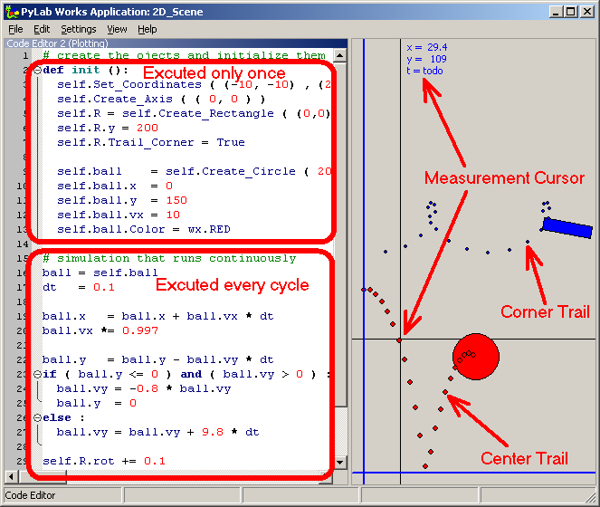

Brick 2D Scene  (april 2008)
(april 2008)
Application Designer / Domain Expert / Control Designer / Core Developer
Introduction
This Brick (consisting of just one control: tScene_2D) presents a 2D space in which you can create 2D animations. In combination with a Code-Editor Brick you can easily simulate physics dynamics and even the special relativity theory of Einstein..

All positions are done in the coordinate system of the user. Most shapes have all common properties, can be dragged around with the mouse and have 2 trails (can be turned on/off) that can be used to measure speed. There are a few special shapes that perform special tasks, e.g. button-shape toggles it's value that can be read by the program code.
This is just a first version and not all issues are decided yet. At this moment the following issues are open for discussion:
The measurement cursor is toggled by the middle mouse button, and can dragged with the middle mouse button. Of course the values in the labels are in the user coordinate system.
Future Extensions
Common Properties
|
Color |
|
|
Line_Width |
All shapes use this to determine the width of the lines, e.g. the Text_Shape uses this property to determine the fontsize |
|
x,y |
The position of the center of the shape |
|
vx,vy |
The speed of the shape |
|
Trail |
If True, the Center Trail is drawn |
|
Trail_Corner |
If True, the Corner Trail is drawn |
|
Specifying the size of an object Whenever possible, objects have an universal way of specifying their size. The origin of the object is always defined as the left- bottom (LB) point. The user can choose between specifying width-height (WH), right-top (RT) and a vector from the origin length-angle (RPhi). Here are the 3 ways of generating an identical (but shifted) arrow: (the Line_Width setting is not shown in the code) |
|
Coordinate System All coordinates are specified in the user coordinate system, i.e. the user specifies the world value (user value) of the left-bottom / width-height or right-top of the 2D-space. And all object positions should be specified in the user values. If the top value is omitted, the scaling of the Y-axis will be the same as the scaling of the X-axis, so the top value will be depending on the width-height ratio of the visible window. The top picture on the right shows the uniform coordinate system when height / top is not specified. The bottom picture on the right shows the non-uniform coordinate system, where top or height is specified. Defaults:
|
|
|
Axis_Shape You can have multiple axis. The Axis_Shape can either be specified with x,y values or by one xy-tuple. Defaults:
|
|
|
Grid_Shape The Grid_Shape is just like any other shape, on creating, the tick interval is specified. After creation you can change the standard properties. Although the grid can't be rotated, you can specify the property rot, which can already be set on creation as the second parameter. If rotation is not zero, a special grid is created (the red grid in the lower figure on the right), to visualize the time-space in special relativity theory. Defaults:
|
|
|
Line_Shape Defined by an Origin (left bottom) and with either WH (default), RT or RPhi. Rotation is not done around the center, but around the origin ! |
Defaults:
|
|
Arrow_Shape Identical to Line_Shape, except that the second point is an arrow-head. The size of the arrow-head is determined on the base of the Line_Width. |
Defaults: see Line_Shape |
|
Text_Shape Text_Shape is a normal shape that can be moved around and rotated. Fontsize is determined on the base of the standard property Line_Width. Defaults:
|
|
Circle_Shape On creation you can (but don't need to) specify the Radius and the Center position. The code below generates the Red Ball in the picture on the right, that has both trails on. The corner trail is at the bottom of the ball (as long as the ball is not rotated. Defaults:
|
|
Rectangle_Shape Normal shape, can be moved, rotated, has both center trail and left-bottom corner trail, can be specified withe the universal parameters. So both the code pieces below (color settings not shown), will generate the same figure, as shown on the right. |
|
Free_Shape Free_Shape is some shapes defined by an unlimited series of points. |
|
Function_Shape Put in a function (as a string) and a range (may be floats), and this Shape will draw the curve. |
|
Points_Shape Same as Function_Shape, but now you've to specify series of xy points. |
|
Button_Shape This is not really a shape, it can not be selected, nor moved. But clicking on it will change it's value and toggles the color, so this can be used to control the program. |